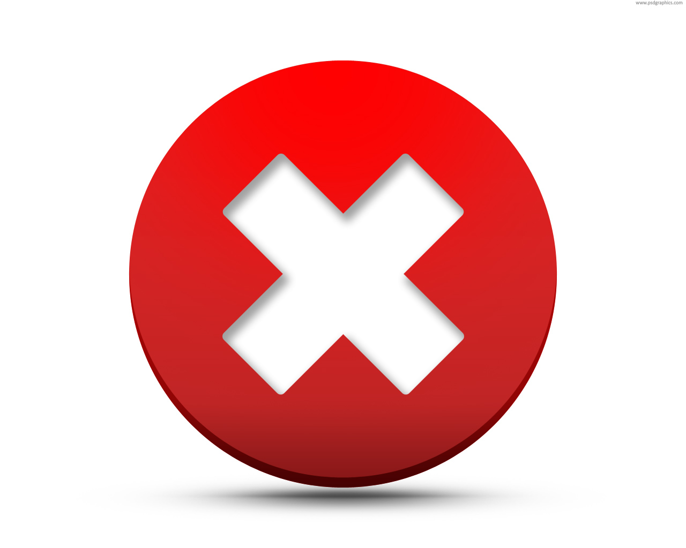

<link rel="import" href="../../bower_components/polymer/polymer.html" />
<link rel="import" href="../../bower_components/core-ajax/core-ajax.html" />
<link rel="import" href="../../bower_components/paper-button/paper-button.html" />

<polymer-element name="dailyFeed-table" attributes="feedDate">
  <template>
    <link rel="stylesheet" href="../../FT.css" />
    <table>
      <tr>
        <th>Number:</th>
        <th>Amount Tube Fed:</th>
        <th></th>
        <th></th>
      </tr>
      <template repeat="{{feed in feeds}}">
        <tr>
          <td >{{feed.number}}</td>
          <td >{{feed.tubeFedAmount}}</td>
          <td id="percent" class="{{getPercentageClass(getPercentTaken(feed))}}">{{getPercentTaken(feed)}}%</td>
          <td ><paper-button on-click="{{deleteFeed(feed)}}">delete<!----></paper-button></td>
        </tr>
      </template>
    </table>
    <p id="summary">Total percent for the day: {{displayPercent}}%</p>
    <core-ajax id="getFeedsAjax" url="/app/feed/{{feedDate}}" auto response="{{feeds}}" handleas="json" on-core-response="{{getFeedSummary}}"></core-ajax>
    <core-ajax id="deleteFeedAjax" url="/app/feed" method="DELETE" contentType="application/json" ></core-ajax>
  </template>
  <script>
    Polymer({
      feedDate : new Date().toJSON(),
      feeds : [],

      update : function () {
        this.$.getFeedsAjax.go();
      },
      
      getFeedSummary : function () {
        var totalPercent = 0;
        if(this.feeds == null) {
          return;
        }
        var arrayLength = this.feeds.length;
        for (var i = 0; i < arrayLength; i++) {
          var feed = this.feeds[i];
          var percentTaken = (feed.totalAmount - feed.tubeFedAmount)/feed.totalAmount;
          totalPercent += percentTaken;

          percentTaken *= 100;
        }
        this.displayPercent = (totalPercent/arrayLength * 100).toFixed(2);
      },

      deleteFeed : function(feed) {
        var ajax = this.$.deleteFeedAjax;
        ajax.params = '{"id":"' + feed.id + '"}';
        ajax.go();

        this.update();
      },

      getPercentTaken : function(feed) {
        return ((feed.totalAmount - feed.tubeFedAmount)/feed.totalAmount * 100).toFixed(2);
      },

      getPercentageClass : function (percentTaken) {
        if(percentTaken != 0 && percentTaken < 30) {
          return  "bad";
        }
        else if(percentTaken >= 30 && percentTaken < 70) {
          return "ok";
        }
        else if(percentTaken >= 70) {
          return "good";
        }
      },

      ready : function() {
        this.update();
      }
            });
  </script>
</polymer-element>
